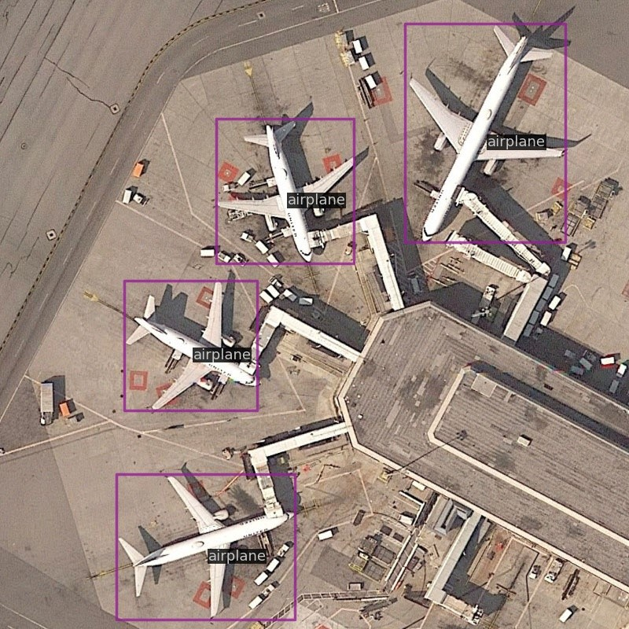
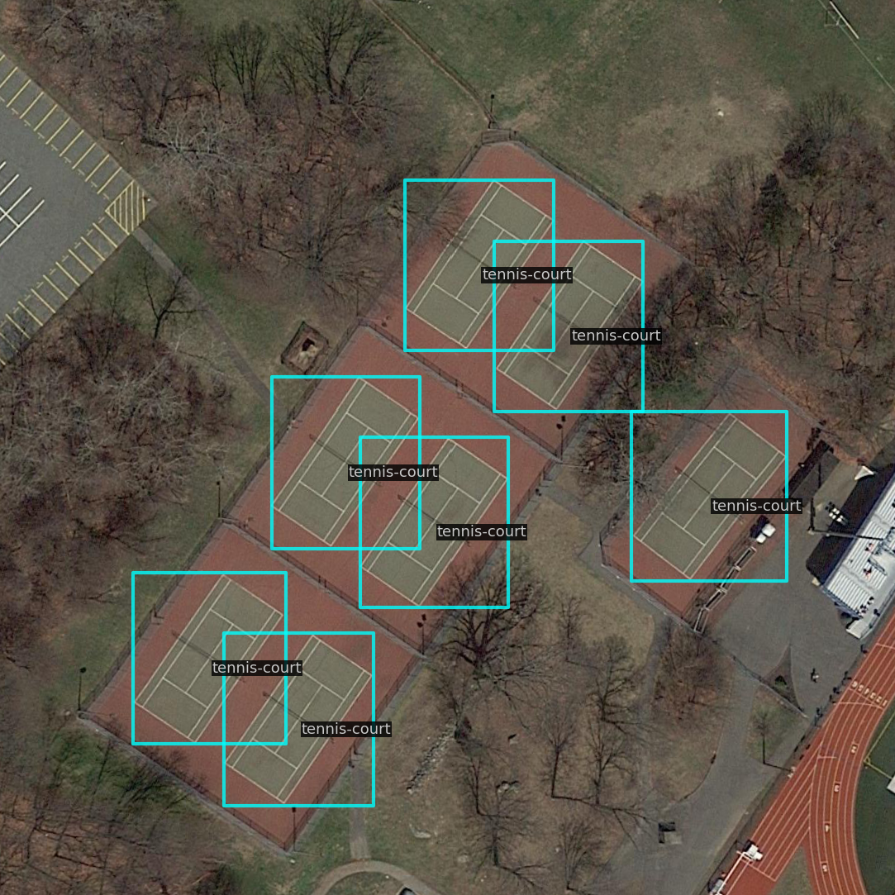
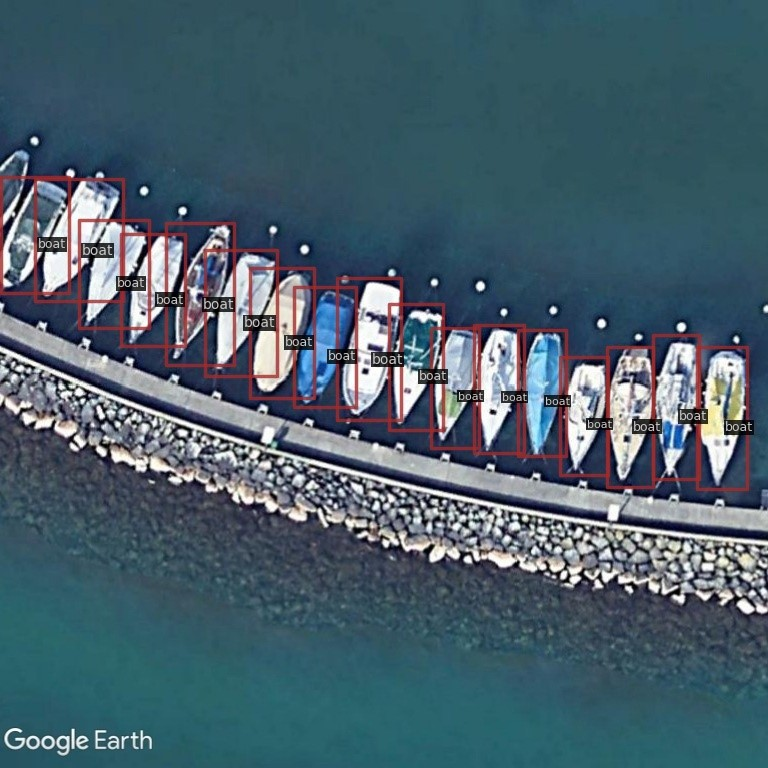
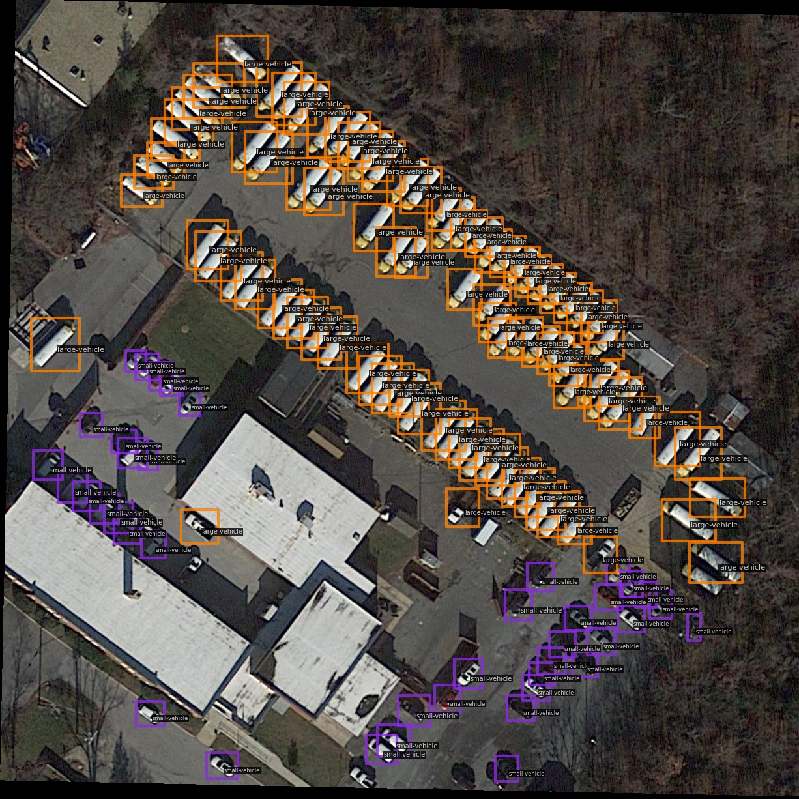

Weakly supervised Oriented Object Detection (WS-OOD) has gained attention as a cost-effective alternative to fully supervised methods, providing efficiency and high accuracy. Among weakly supervised approaches, horizontal bounding box (HBox) supervised OOD stands out for its ability to directly leverage existing HBox annotations while achieving the highest accuracy under weak supervision settings. This paper introduces adaptive bounding box scaling and symmetry-prior-based orientation prediction, called ABBSPO that is a framework for WS-OOD. Our ABBSPO addresses the limitations of previous HBox-supervised OOD methods, which compare ground truth (GT) HBoxes directly with predicted RBoxes' minimum circumscribed rectangles, often leading to inaccuracies. To overcome this, we propose: (i) Adaptive Bounding Box Scaling (ABBS) that appropriately scales the GT HBoxes to optimize for the size of each predicted RBox, ensuring more accurate prediction for RBoxes' scales; and (ii) a Symmetric Prior Angle (SPA) loss that uses the inherent symmetry of aerial objects for self-supervised learning, addressing the issue in previous methods where learning fails if they consistently make incorrect predictions for all three augmented views (original, rotated, and flipped). Extensive experimental results demonstrate that our ABBSPO achieves state-of-the-art results, outperforming existing methods.
Our ABBSPO leverages weakly supervised learning from HBox annotations to accurately predict RBoxes. The framework incorporates the Orientation Learning Branch (OLB) for precise angle estimation, using the Symmetric Prior Angle (SPA) loss, and the Scale Learning Branch (SLB) for optimal scale adjustment via the Adaptive Bounding Box Scaling (ABBS) module. The framework supports both C-HBox and T-HBox ground truths, ensuring robust and accurate predictions.
Quantitative results of each category on the DIOR-R test dataset for RBox-supervised ($\text{S}_R$), Image-supervised ($\text{S}_I$), Point-supervised ($\text{S}_P$) and HBox-supervised ($\text{S}_H$) methods. The 3-$\text{AP}_{50}$ represents the mean $\text{AP}_{50}$ scores for three complex shaped objects categories: ‘airplane’ (APL), ‘expressway service area’ (ESA), and ‘overpass’ (OP). The notation † indicates models whose results are reported in the PointOBB paper.
Quantitative results of each category on the DOTA-v1.0 validation dataset for ($\text{S}_R$),($\text{S}_I$),($\text{S}_P$), and ($\text{S}_H$) methods. The 3-$\text{AP}_{50}$ represents the mean $\text{AP}_{50}$ scores for three complex shaped objects categories: plane (PL), swimming pool (SP), and helicopter (HC). All the methods are re-trained using only train dataset for fair comparison.
Rotated FCOS was trained only with GT RBoxes, while H2RBox, H2RBox-v2 and our ABBSPO were trained with GT T-HBoxes (1st row) and GT C-HBoxes (2nd row)
Additional qualitative results on DIOR and DOTA-v1.0 datasets.
@inproceedings{lee2025abbspo,
title={ABBSPO: Adaptive Bounding Box Scaling and Symmetric Prior based Orientation Prediction for Detecting Aerial Image Objects},
author={Lee, Woojin and Chang, Hyugjae and Moon, Jaeho and Lee, Jaehyup and Kim, Munchurl},
booktitle={Proceedings of the IEEE/CVF Conference on Computer Vision and Pattern Recognition (CVPR)},
year={2025}
}